ДЗ 19-20
Сила упругости. Закон Всемирного тяготения
Выберите вариант ответа или введите полученное числовое значение.
Задача 1
Для трех упругих жгутов построили графики зависимости модуля силы упругости $F_{\text{упр}}$, возникающей в деформированном жгуте, от его абсолютного удлинения $\Delta l$ (рис. 57). Если жесткости первого, второго и третьего жгутов соответственно $k_1$, $k_2$ и $k_3$, то для них правильным является соотношение, указанное под номером:
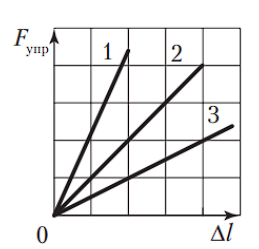
Решение:
А1. По закону Гука жесткость жгута $k = \frac{F_{\text{упр}}}{\Delta l}$. Чем больше угол наклона графика (рис. 57) $F_{\text{упр}}(\Delta l)$, тем больше жесткость жгута. Следовательно, правильным соотношением является: $k_3 < k_2 < k_1$.
Задача 2
На рисунке 58 показан график зависимости модуля силы упругости $F_{\text{упр}}$, возникающей в легкой упругой резиновой полоске, от ее длины $l$. Жесткость $k$ полоски равна:
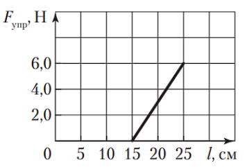
Решение:
А2. Используя закон Гука и данные графика (рис. 58), найдем жесткость резиновой полоски: $k = \frac{F_{\text{упр}}}{l - l_0} = 60\text{ }\frac{\text{Н}}{\text{м}}$, где $F_{\text{упр}} = 6,0\text{ Н}$, $l = 25\text{ см}$ и $l_0 = 15\text{ см}$.
Задача 3
Если пружину укоротили на величину $\varepsilon = 20\text{ }\%$, то относительное изменение жесткости пружины $\eta$ равно:
Решение:
А4. Жесткость пружины обратно пропорциональна длине пружины. Пусть жесткость целой пружины равна $k_1$, тогда жесткость укороченной пружины $k_2 = 1,25k_1$. Относительное изменение жесткости пружины
$$\eta = \frac{k_2 - k_1}{k_1} \cdot 100\text{ }\% = 25\text{ }\%.$$
Задача 4
Брусок массой $m = 3,0\text{ кг}$ тянут по горизонтальной поверхности с постоянной скоростью с помощью горизонтальной невесомой пружины. Коэффициент трения между бруском и поверхностью $\mu = 0,25$. Если удлинение пружины $\Delta l = 15\text{ см}$, то ее жесткость $k$ равна:
Решение:
А5. На рисунке 431 показаны силы, действующие на брусок. Запишем второй закон Ньютона: $m\vec{g} + \vec{N} + \vec{F}_{\text{упр}} + \vec{F}_{\text{тр}} = \vec{0}$. В проекциях на координатные оси $Ox$ и $Oy$ получим: $F_{\text{упр}} - F_{\text{тр}} = 0$ и $N - mg = 0$. Модуль силы трения $F_{\text{тр}} = \mu N$. По закону Гука $F_{\text{упр}} = k\Delta l$. Из записанных уравнений найдем ответ:
$$k = \frac{\mu mg}{\Delta l} = 50\text{ }\frac{\text{Н}}{\text{м}}.$$
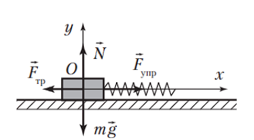
Задача 5
Однородный деревянный $\left(\rho = 600\text{ }\frac{\text{кг}}{\text{м}^3}\right)$ брусок объемом $V = 5,0\text{ дм}^3$ тянут по горизонтальному полу с помощью горизонтальной невесомой пружины с ускорением, модуль которого $a = 1,0\text{ }\frac{\text{м}}{\text{с}^2}$. Коэффициент трения между бруском и полом $\mu = 0,30$. Если жесткость пружины $k = 100\text{ }\frac{\text{Н}}{\text{м}}$, то ее удлинение $\Delta l$ равно:
Решение:
А6. Из второго закона Ньютона следует: $F_{\text{упр}} - F_{\text{тр}} = ma$ и $N - mg = 0$. Масса бруска $m = \rho V$. Модуль силы трения $F_{\text{тр}} = \mu N$. По закону Гука $F_{\text{упр}} = k\Delta l$. Из записанных уравнений найдем ответ:
$$\Delta l = \frac{\rho V(\mu g + a)}{k} = 12\text{ см}.$$
Задача 6
К легкой пружине жесткостью $k = 40\text{ }\frac{\text{Н}}{\text{м}}$ подвешен груз массой $m = 400\text{ г}$. Если длина растянутой пружины при этом $l = 30\text{ см}$, то длина $l_0$ недеформированной пружины равна:
Решение:
А7. Из второго закона Ньютона и закона Гука следует: $mg = k(l - l_0)$. Отсюда $l_0 = 20\text{ см}$.
Задача 7
Длина пружины динамометра, к которому подвешен один грузик, $l_1 = 61\text{ мм}$. К динамометру подвесили дополнительно еще два таких же грузика. Если длина пружины после этого стала $l_2 = 99\text{ мм}$, то длина $l_0$ недеформированной пружины динамометра равна:
Решение:
А8. Используя второй закон Ньютона и закон Гука, запишем два уравнения: $k(l_1 - l_0) = P$ и $k(l_2 - l_0) = 3P$, где $k$ — жесткость пружины, $P$ — модуль веса одного грузика. Из записанных уравнений найдем ответ: $l_0 = 42\text{ мм}$.
Задача 8
К упругой легкой пружине поочередно подвешивали грузы массами $m_1 = 390\text{ г}$ и $m_2 = 270\text{ г}$. Если длина пружины при этом была $l_1 = 64\text{ см}$ и $l_2 = 56\text{ см}$ соответственно, то жесткость $k$ пружины равна:
Решение:
А9. Используя второй закон Ньютона и закон Гука, запишем два уравнения: $k(l_1 - l_0) = m_1 g$ и $k(l_2 - l_0) = m_2 g$, где $l_0$ — длина недеформированной пружины. Из записанных уравнений найдем ответ: $k = 15\text{ }\frac{\text{Н}}{\text{м}}$.
Задача 9
Динамометр с прикрепленным к нему грузом сначала поднимали вертикально вверх с ускорением, модуль которого $a = 0,60\text{ }\frac{\text{м}}{\text{с}^2}$, а затем опускали с ускорением, модуль которого $a_2 = a$. Если разность показаний динамометра $|\Delta F| = 30\text{ Н}$, то масса $m$ груза равна:
Решение:
А13. Из второго закона Ньютона и закона Гука следует: $F_1 - mg = ma$ и $mg - F_2 = ma$. Из записанных уравнений найдем ответ:
$$m = \frac{|\Delta F|}{2a} = 25\text{ кг}.$$
Задача 10
Груз, подвешенный на легкой пружине, поднимают вверх, один раз — равномерно, другой — с ускорением, модуль которого $a = 2,0\text{ }\frac{\text{м}}{\text{с}^2}$. Если в первом случае длина пружины $l_1 = 42\text{ см}$, а во втором — $l_2 = 45\text{ см}$, то длина $l_0$ недеформированной пружины равна:
Решение:
А15. В первом случае $k(l_1 - l_0) = mg$, во втором случае $k(l_2 - l_0) - mg = ma$. Из записанных уравнений следует ответ: $l_0 = 27\text{ см}$.
Задача 11
К потолку равноускоренно движущейся кабины лифта на упругом легком шнуре жесткостью $k_1 = 96\text{ }\frac{\text{Н}}{\text{м}}$ подвешен груз массой $m_1 = 1,0\text{ кг}$. Снизу к грузу прикреплена невесомая пружина жесткостью $k_2 = 80\text{ }\frac{\text{Н}}{\text{м}}$, на которой подвешена гиря массой $m_2 = 2,0\text{ кг}$. Если удлинение пружины $\Delta l_2 = 20\text{ см}$, то удлинение $\Delta l_1$ шнура равно:
Решение:
А16. На рисунке 432 показаны силы, действующие на груз и гирю. Направление ускорения неизвестно. По второму закону Ньютона в проекциях на ось $Ox$ запишем два уравнения: $m_1 g - F_1 + F_2' = m_1 a_x$ и $m_2 g - F_2 = m_2 a_x$, где $F_1 = k_1 \Delta l_1$, $F_2 = F_2'$. Выясним направление ускорения кабины лифта, а значит, гири и груза. По закону Гука $F_2 = k_2 \Delta l_2 = 16\text{ Н}$. Модуль силы тяжести, действующей на гирю, $m_2 g = 20\text{ Н}$. Так как $F_2 < m_2 g$, то ускорение направлено вниз. Из записанных уравнений найдем ответ:
$$\Delta l_1 = \frac{k_2 \Delta l_2(m_1 + m_2)}{k_1 m_2} = 25\text{ см}.$$
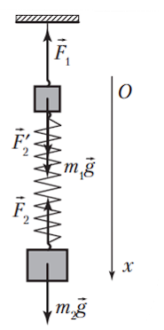
Задача 12
На рисунке 62 показан график зависимости модуля перемещения $\Delta r$ от времени $t$ движения тела, которое поднимают вверх на упругом легком жгуте жесткостью $k = 63\text{ }\frac{\text{Н}}{\text{м}}$. Если удлинение жгута $\Delta l = 12\text{ см}$, то масса $m$ тела равна:
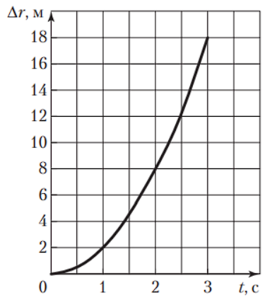
Решение:
А19. Используя график (рис. 62), запишем два уравнения: $\Delta r_1 = \upsilon_0 t_1 + \frac{at_1^2}{2}$ и $\Delta r_2 = \upsilon_0 t_2 + \frac{at_2^2}{2}$, где $\Delta r_1 = 8\text{ м}$, $t_1 = 2\text{ с}$, $\Delta r_2 = 18\text{ м}$ и $t_2 = 3\text{ с}$. Отсюда модуль ускорения тела $a = 4\text{ }\frac{\text{м}}{\text{с}^2}$. Из второго закона Ньютона и закона Гука следует: $k\Delta l - mg = ma$. Отсюда $m = 0,54\text{ кг}$.
Задача 13
Брусок массой $m = 800\text{ г}$, прикрепленный к легкому жгуту жесткостью $k = 32\text{ }\frac{\text{Н}}{\text{м}}$, равноускоренно перемещают вдоль оси $Ox$ по горизонтальной поверхности под действием горизонтально направленной силы, приложенной к свободному концу жгута. Коэффициент трения между бруском и поверхностью $\mu = 0,40$. Если в момент времени $t_1 = 0,50\text{ с}$, считая от начала движения бруска, его координата была $x_1 = 40\text{ см}$, а в момент времени $t_2 = 1,0\text{ с}$ координата бруска стала $x_2 = 70\text{ см}$, то удлинение $\Delta l$ жгута было равно ... см.
Решение:
В1. На рисунке 433 показаны силы, действующие на брусок. Запишем второй закон Ньютона: $m\vec{g} + \vec{N} + \vec{F}_{\text{упр}} + \vec{F}_{\text{тр}} = m\vec{a}$. В проекциях на координатные оси $Ox$ и $Oy$ получим: $F_{\text{упр}} - F_{\text{тр}} = ma$ и $N - mg = 0$. Модуль силы трения $F_{\text{тр}} = \mu N$. По закону Гука $F_{\text{упр}} = k\Delta l$. Используя кинематический закон движения, запишем два уравнения: $x_1 = x_0 + \frac{a_x t_1^2}{2}$ и $x_2 = x_0 + \frac{a_x t_2^2}{2}$, где $x_0$ — начальная координата бруска. Подставив данные задачи, найдем модуль ускорения бруска: $a = 0,80\text{ }\frac{\text{м}}{\text{с}^2}$. Из записанных уравнений найдем ответ: $\Delta l = 12\text{ см}$.
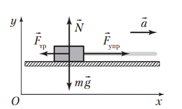
Задача 14
К ящику массой $m = 64\text{ кг}$, находящемуся на гладкой горизонтальной поверхности, прикреплен резиновый жгут длиной $l_0 = 1,2\text{ м}$ и жесткостью $k = 400\text{ }\frac{\text{Н}}{\text{м}}$. К свободному концу жгута приложили горизонтальную силу, и ящик начал двигаться. При этом длина жгута стала $l = 1,6\text{ м}$. Если путь, пройденный ящиком из состояния покоя, $s = 7,2\text{ м}$, то средняя скорость $\langle\upsilon\rangle$ движения ящика на этом пути равна ... $\frac{\text{дм}}{\text{с}}$.
Решение:
В2. Из второго закона Ньютона и закона Гука следует: $k(l - l_0) = ma$, где $a$ — модуль ускорения ящика. Время разгона найдем из формулы $s = \frac{at^2}{2}$. Средняя скорость пути $\langle\upsilon\rangle = \frac{s}{t}$. Из записанных уравнений найдем ответ:
$$\langle\upsilon\rangle = \sqrt{\frac{sk(l - l_0)}{2m}} = 30\text{ }\frac{\text{дм}}{\text{с}}$$
Задача 15
Легкая пружина соединяет два кубика массами $m_1 = 0,50\text{ кг}$ и $m_2 = 0,80\text{ кг}$. Когда система подвешена за верхний кубик массой $m_1$, то длина пружины $l_1 = 55\text{ см}$, а когда система поставлена на нижний кубик массой $m_2$ — длина пружины $l_2 = 22,5\text{ см}$. Жесткость $k$ пружины равна ... $\frac{\text{Н}}{\text{м}}$.
Решение:
В3. Рассмотрим первый случай. По второму закону Ньютона и закону Гука $k(l_1 - l_0) = m_1 g$. Рассмотрим второй случай. По второму закону Ньютона и закону Гука $k(l_0 - l_2) = m_2 g$. Из записанных уравнений следует: $k = 40\text{ }\frac{\text{Н}}{\text{м}}$.
Задача 16
Если к нижнему концу вертикально висящей легкой пружины прикрепить груз, то ее длина станет $l_1 = 50\text{ см}$. Если другой такой же груз, не снимая первого, прикрепить к середине пружины, то ее длина возрастет до $l_2 = 64\text{ см}$. Длина пружины $l_0$ в недеформированном состоянии равна ... см.
Решение:
В4. Из второго закона Ньютона и закона Гука следует: $k(l_1 - l_0) = mg$. Когда подвесили второй груз, справедливым стало уравнение $2k(l_2 - l_1) = mg$. Из записанных уравнений найдем ответ: $l_0 = 3l_1 - 2l_2 = 22\text{ см}$.
Задача 17
Тело массой $m = 2,0\text{ кг}$ тянут по гладкой горизонтальной поверхности вдоль оси $Ox$ с помощью легкой пружины, составляющей угол $\alpha = 30^\circ$ с вертикалью. На рисунке 64 представлен график зависимости проекции скорости $\upsilon_x$ движения тела от времени $t$. Если жесткость пружины $k = 25\text{ }\frac{\text{Н}}{\text{м}}$, то ее удлинение $\Delta l$ равно ... мм.
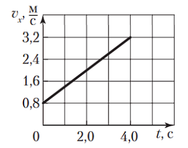
Решение:
В6. В соответствии с графиком (рис. 64) проекция ускорения тела $a_x = \frac{\upsilon_x - \upsilon_{0x}}{\Delta t} = 0,6\text{ }\frac{\text{м}}{\text{с}^2}$, где $\upsilon_x = 3,2\text{ }\frac{\text{м}}{\text{с}}$, $\upsilon_{0x} = 0,8\text{ }\frac{\text{м}}{\text{с}}$ и $\Delta t = 4,0\text{ с}$. На рисунке 434 показаны силы, действующие на тело. Из второго закона Ньютона и закона Гука следует: $k\Delta l \cos\left(\frac{\pi}{2} - \alpha\right) = ma$, где $a = a_x$. Отсюда $\Delta l = 96\text{ мм}$.
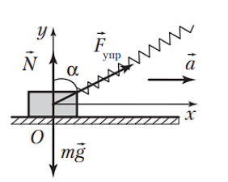
Задача 18
На горизонтальной плоскости находится брусок, который тянут с помощью легкой пружины, расположенной под углом $\alpha$ ($\cos\alpha = 0,80$) (рис. 65). Масса бруска $m = 0,69\text{ кг}$. Коэффициент трения между бруском и плоскостью $\mu = 0,20$. Через промежуток времени $\Delta t = 0,60\text{ с}$ брусок из состояния покоя прошел путь $s = 36\text{ см}$. Если абсолютное удлинение пружины $\Delta l = 15\text{ см}$, то жесткость $k$ пружины равна ... $\frac{\text{Н}}{\text{м}}$.
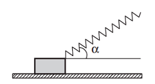
Решение:
В7. На рисунке 435 показаны силы, действующие на брусок. Запишем второй закон Ньютона: $m\vec{g} + \vec{N} + \vec{F}_{\text{упр}} + \vec{F}_{\text{тр}} = m\vec{a}$. В проекциях на координатные оси $Ox$ и $Oy$ получим: $F_{\text{упр}}\cos\alpha - F_{\text{тр}} = ma$ и $N + F_{\text{упр}}\sin\alpha - mg = 0$, где $\sin\alpha = \sqrt{1 - \cos^2\alpha} = 0,6$. Модуль силы трения $F_{\text{тр}} = \mu N$. По закону Гука $F_{\text{упр}} = k\Delta l$. Модуль ускорения бруска найдем из формулы $s = \frac{a\Delta t^2}{2}$. Из записанных уравнений найдем ответ: $k = 20\text{ }\frac{\text{Н}}{\text{м}}$.
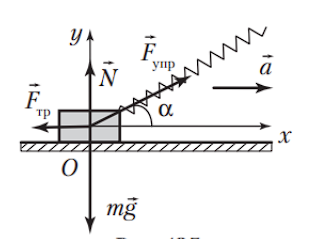
Задача 19
Два бруска массами $m_1 = 0,20\text{ кг}$ и $m_2 = 0,30\text{ кг}$, соединенные легкой пружиной жесткостью $k = 25\text{ }\frac{\text{Н}}{\text{м}}$, находятся на горизонтальной гладкой поверхности (рис. 66). На брусок массой $m_2$ действует постоянная горизонтальная сила, модуль которой $F = 10\text{ Н}$. Величина сжатия $|\Delta l|$ пружины при движении брусков равна ... см.
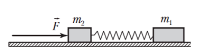
Решение:
В8. По второму закону Ньютона $F = (m_1 + m_2)a$. Из второго закона Ньютона и закона Гука следует: $k|\Delta l| = m_1 a$. Отсюда
$$|\Delta l| = \frac{m_1 F}{k(m_1 + m_2)} = 16\text{ см}.$$
Задача 20
Два бруска массами $m_1 = 0,40\text{ кг}$ и $m_2 = 0,60\text{ кг}$, соединенные легкой пружиной жесткостью $k = 10\text{ }\frac{\text{Н}}{\text{м}}$, движутся под действием горизонтальной силы, модуль которой $F = 6,0\text{ Н}$, по горизонтальной поверхности (рис. 68). Если на первый и второй брусок действует сила трения, модуль которой соответственно $F_{\text{тр1}} = 1,6\text{ Н}$ и $F_{\text{тр2}} = 2,4\text{ Н}$, то удлинение пружины $\Delta l$ равно ... см.
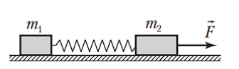
Решение:
В10. На рисунке 436 показаны силы, действующие на бруски. По второму закону Ньютона в проекциях на координатную ось $Ox$ получим: $F_1 - F_{\text{тр1}} = m_1 a$ и $F - F_2 - F_{\text{тр2}} = m_2 a$. По закону Гука $F_1 = F_2 = k\Delta l$. Из записанных уравнений найдем ответ: $\Delta l = 24\text{ см}$.
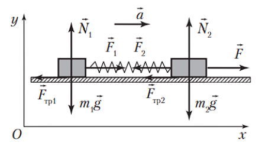
Задача 21
Брусок массой $m_1 = 1,0\text{ кг}$, находящийся на горизонтальной поверхности стола (рис. 69), связан легкой пружиной и невесомой нерастяжимой нитью, перекинутой через легкий блок, с грузом массой $m_2 = 0,50\text{ кг}$. При движении на брусок действует сила трения, модуль которой $F_{\text{тр}} = 2,0\text{ Н}$. Если удлинение пружины $\Delta l = 50\text{ мм}$, то ее жесткость $k$ равна ... $\frac{\text{Н}}{\text{м}}$.
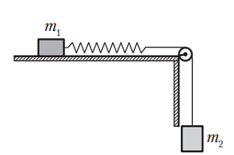
Решение:
В11. На рисунке 437 показаны силы, действующие на брусок и груз. По второму закону Ньютона в проекциях на координатные оси получим: $F_1 - F_{\text{тр}} = m_1 a_1$ и $m_2 g - F_2 = m_2 a_2$. По закону Гука $F_1 = F_2 = k\Delta l$. Учитывая, что $a_1 = a_2$, из записанных уравнений найдем ответ:
$$k = \frac{m_1 m_2 g + m_2 F_{\text{тр}}}{\Delta l(m_1 + m_2)} = 80\text{ }\frac{\text{Н}}{\text{м}}.$$
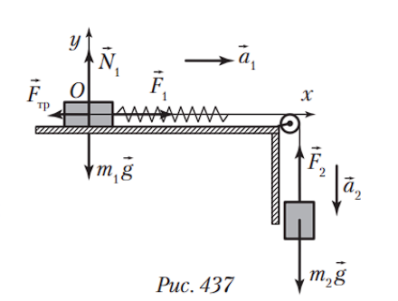
Задача 22
Вниз по наклонной плоскости, образующей угол $\alpha = 30^\circ$ с горизонтом, равноускоренно скользит брусок массой $m = 200\text{ г}$, к которому прикреплена легкая пружина жесткостью $k = 2,0\text{ }\frac{\text{Н}}{\text{м}}$ (рис. 70). Если при движении на брусок действует сила трения скольжения, модуль которой $F_{\text{тр}} = 0,12\text{ Н}$, а удлинение пружины, расположенной параллельно наклонной плоскости, $\Delta l = 40\text{ мм}$, то модуль ускорения $a$ бруска равен ... $\frac{\text{м}}{\text{с}^2}$.
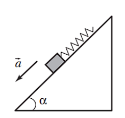
Решение:
В12. На рисунке 438 показаны силы, действующие на брусок. По второму закону Ньютона $m\vec{g} + \vec{N} + \vec{F}_{\text{упр}} + \vec{F}_{\text{тр}} = m\vec{a}$. В проекции на ось $Ox$ получим: $mg\sin\alpha - F_{\text{упр}} - F_{\text{тр}} = ma$. По закону Гука $F_{\text{упр}} = k\Delta l$. Из записанных уравнений найдем ответ:
$$a = \frac{mg\sin\alpha - F_{\text{упр}} - F_{\text{тр}}}{m} = 4\text{ }\frac{\text{м}}{\text{с}^2}.$$
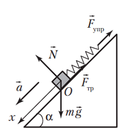
Задача 23
Через легкий блок перекинута невесомая нерастяжимая нить, к одному концу которой подвешен груз массой $m_1 = 100\text{ г}$, а к другому прикреплена невесомая пружина (рис. 71). Снизу к пружине подвешен груз массой $m_2 = 300\text{ г}$. При движении грузов длина пружины $l = 24\text{ см}$. Если под действием силы, модуль которой $F = 2,0\text{ Н}$, пружина удлиняется на $\Delta l = 40\text{ мм}$, то длина $l_0$ недеформированной пружины равна ... см.
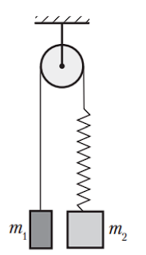
Решение:
В14. На рисунке 440 показаны силы, действующие на каждый груз. По второму закону Ньютона $m_1\vec{g} + \vec{F}_{\text{упр}} = m_1\vec{a}_1$ и $m_2\vec{g} + \vec{F}_{\text{упр}} = m_2\vec{a}_2$. В проекции на ось $Ox$ получим: $m_1 g - F_{\text{упр}} = -m_1 a_1$ и $m_2 g - F_{\text{упр}} = m_2 a_2$. По закону Гука $F_{\text{упр}} = k(l - l_0)$. Определим жесткость пружины: $k = \frac{F}{\Delta l} = 50\text{ }\frac{\text{Н}}{\text{м}}$. Учитывая, что $a_1 = a_2$, из записанных уравнений найдем ответ:
$$l_0 = l - \frac{2m_1 m_2 g}{k(m_2 + m_1)} = 21\text{ см}.$$
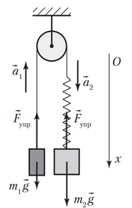
Задача 24
Два груза массами $m_1 = 0,30\text{ кг}$ и $m_2 = 0,60\text{ кг}$ соединены невесомой нерастяжимой нитью, перекинутой через легкий блок, подвешенный на пружине (рис. 72). Если жесткость пружины $k = 32\text{ }\frac{\text{Н}}{\text{м}}$, то при движении грузов удлинение пружины $\Delta l$ равно ... см.
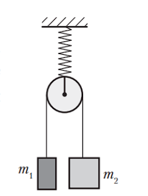
Решение:
В15. На рисунке 441 показаны силы, действующие на каждый груз. По второму закону Ньютона $m_1\vec{g} + \vec{F}_1 = m_1\vec{a}_1$ и $m_2\vec{g} + \vec{F}_2 = m_2\vec{a}_2$. В проекции на ось $Ox$ получим: $m_1 g - F_1 = -m_1 a_1$ и $m_2 g - F_2 = m_2 a_2$. Учитывая, что $a_1 = a_2$ и $F_1 = F_2$, найдем модуль силы натяжения нити: $F_1 = \frac{2m_1 m_2 g}{m_1 + m_2} = 4\text{ Н}$. По третьему закону Ньютона $F_1 = F_1'$ и $F_2 = F_2'$. По второму закону Ньютона $F = F_1' + F_2'$. По закону Гука $F = k\Delta l$. Из записанных уравнений найдем ответ: $\Delta l = 25\text{ см}$.
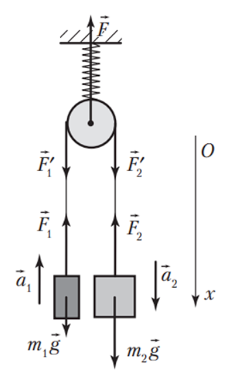
Задача 25
Брусок массой $m_1 = 0,50\text{ кг}$, находящийся на горизонтальной поверхности, связан легкой нерастяжимой нитью, перекинутой через легкий блок, вращающийся без трения, и легкой пружиной с грузом массой $m_2 = 0,40\text{ кг}$ (рис. 73). Коэффициент трения скольжения между бруском и поверхностью $\mu = 0,35$. Поверхность перемещают вертикально вверх с ускорением, модуль которого $a = 2,0\text{ }\frac{\text{м}}{\text{с}^2}$. Если жесткость пружины $k = 36\text{ }\frac{\text{Н}}{\text{м}}$, то абсолютное удлинение пружины $\Delta l$ равно ... см.
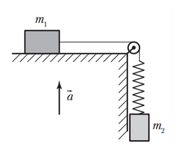
Решение:
В16. Рассмотрим решение задачи относительно земли. На рисунке 442 показаны силы, действующие на брусок и груз. Из второго закона Ньютона следует: $F_1 - F_{\text{тр}} = m_1 a_1$, $N - m_1 g = m_1 a$, $m_2 g - F_2 = m_2 a_2 - m_2 a$. Модуль силы трения $F_{\text{тр}} = \mu N$, модуль ускорения $a_1 = a_2$, модуль силы $F_1 = F_2$. По закону Гука $F_1 = F_2 = k\Delta l$. Из записанных уравнений найдем ответ:
$$\Delta l = \frac{m_1 m_2(g + a)(1 + \mu)}{(m_1 + m_2)k} = 10\text{ см}.$$
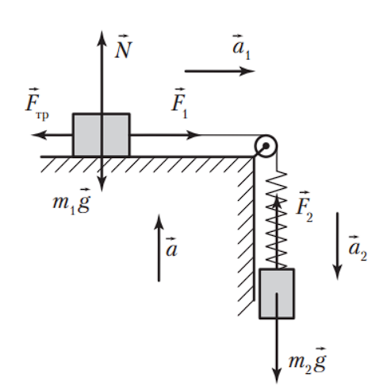
Задача 26
Два однородных шара радиусами $R_1 = 15\text{ см}$ и $R_2 = 25\text{ см}$ соприкасаются друг с другом. Если один из шаров отодвинуть от другого, сместив его на расстояние $l = 1,2\text{ м}$, то модуль силы тяготения между шарами уменьшится в:
Решение:
А16. Запишем закон всемирного тяготения для двух положений шаров: $F_1 = G\frac{m_1 m_2}{(R_1 + R_2)^2}$ и $F_2 = G\frac{m_1 m_2}{(R_1 + R_2 + l)^2}$. Из записанных уравнений найдем ответ: $\frac{F_1}{F_2} = 16$.
Задача 27
Масса Меркурия в восемнадцать раз меньше массы Земли, находится он в 2,5 раза ближе к Солнцу, чем Земля. Модуль силы притяжения Земли к Солнцу больше модуля силы притяжения Меркурия к Солнцу в:
Решение:
А17. По закону всемирного тяготения модуль силы притяжения Меркурия к Солнцу $F_{\text{М}} = G\frac{m_{\text{М}} m_{\text{С}}}{r_{\text{М}}^2}$ и Земли к Солнцу $F_{\text{З}} = G\frac{m_{\text{З}} m_{\text{С}}}{r_{\text{З}}^2}$. Используя условие задачи, запишем соотношения между массами и расстояниями: $m_{\text{З}} = 18m_{\text{М}}$ и $r_{\text{З}} = 2,5r_{\text{М}}$. Из записанных уравнений найдем ответ:
$$\frac{F_{\text{З}}}{F_{\text{М}}} = 2,88.$$
Задача 28
Расстояние между центром Земли и центром Луны равно $60R_{\text{З}}$ ($R_{\text{З}}$ — радиус Земли). Масса Земли в $n = 81$ раз больше массы Луны. Тело, находящееся на линии, соединяющей центр Земли и центр Луны, притягивается к Земле и Луне с одинаковой силой, если оно находится на расстоянии $r$ от центра Луны, равном:
Решение:
А18. Модуль силы притяжения тела к Земле $F_1 = G\frac{m_{\text{З}} m}{r_1^2}$. Модуль силы притяжения тела к Луне $F_2 = G\frac{m_{\text{Л}} m}{r^2}$. Так как модули сил притяжения тела к Земле и к Луне равны, то $\frac{m_{\text{З}}}{r_1^2} = \frac{m_{\text{Л}}}{r^2}$. Масса Земли $m_{\text{З}} = nm_{\text{Л}}$. Расстояние от тела до центра Земли $r_1 = 60R_{\text{З}} - r$. Из записанных уравнений получим $r = 6R_{\text{З}}$.
Задача 29
Расстояние между центрами двух однородных шаров массами $m_1 = 4\text{ кг}$ и $m_2 = 1\text{ кг}$ равно $r_1$. Модуль силы гравитационного взаимодействия между этими шарами равен $F_1$. Если модуль силы гравитационного взаимодействия между двумя однородными шарами массами $m_3 = 8\text{ кг}$ и $m_4 = 0,5\text{ кг}$ составляет $F_2 = 4F_1$, то расстояние $r_2$ между центрами этих шаров равно:
Решение:
А19. Запишем закон всемирного тяготения для двух пар шаров: $F_1 = G\frac{m_1 m_2}{r_1^2}$ и $F_2 = G\frac{m_3 m_4}{r_2^2}$. Так как $F_2 = 4F_1$, то $r_2 = \frac{r_1}{2}$.
Задача 30
На поверхности Земли на полезный груз, находящийся в ракете, действует сила тяготения, модуль которой $F_1 = 14,4\text{ кН}$. На этот же груз, когда ракета поднимется на высоту $h = 2R_{\text{З}}$ ($R_{\text{З}}$ — радиус Земли) от поверхности Земли, будет действовать сила тяготения, модуль которой равен:
Решение:
А20. Начальное расстояние между грузом и центром Земли $r_1 = R_{\text{З}}$. Конечное расстояние между ними $r_2 = R_{\text{З}} + h$. Используя закон всемирного тяготения, запишем два уравнения: $F_1 = G\frac{mM_{\text{З}}}{R_{\text{З}}^2}$ и $F_2 = G\frac{mM_{\text{З}}}{9R_{\text{З}}^2}$. Из этих уравнений следует, что $F_2 = \frac{F_1}{9} = 1,6\text{ кН}$.